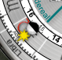
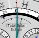
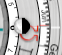
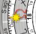
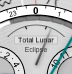

General Help Topics
Complications
In watchmaking, a
complication is any feature beyond the display of hours, minutes, and seconds.
The following table shows which complications are present on each
Emerald Chronometer watch face.
is any feature beyond the display of hours, minutes, and seconds.
The following table shows which complications are present on each
Emerald Chronometer watch face.
| Complication | Watches |
|---|---|
| 24-hour time | Mauna Kea, Geneva, Vienna, Terra, Miami, Gaia |
| Age of Moon | Geneva, Selene |
| Altitude (Moon) | Hana, Chandra, Selene, Venezia |
| Altitude (planets) | Venezia |
| Altitude (Sun) | Haleakalā, Venezia |
| Azimuth (Moon) | Hana, Chandra, Selene |
| Azimuth (planets) | Venezia |
| Azimuth (Sun) | Haleakalā |
| Calendar | Babylon |
| Calendar skew | Geneva, Basel |
| Calendar type | Geneva |
| Compass (Sun/Moon) | Haleakalā, Hana, Venezia |
| Constellations (zodiac) | Mauna Kea, Basel |
| Day/night | Mauna Kea, Vienna, Terra, Gaia, Basel |
| Deadbeat seconds | Haleakalā, Hana, Babylon, Selene |
|
DST
|
Geneva, Terra |
| Eclipse prediction | Selene, Basel |
|
Equation of Time
|
Mauna Kea |
| Equinox | Geneva, Basel |
| Era | Mauna Kea, Selene, Geneva, Basel, Firenze, Venezia, Miami, Babylon |
|
GMT
|
Mauna Kea, Geneva, Basel, Terra |
|
Japanese traditional clock
|
Kyoto |
| Jumping hand | Haleakalā, Hana, Babylon, Selene |
|
Leap year cycle
|
Geneva |
| Moon compass | Hana, Chandra, Venezia |
| Moon distance | Selene |
| Moon ecliptic latitude | Selene |
| Moon elongation | Selene |
|
Moon phase
|
Hana, Chandra, Selene, Geneva, Gaia, Babylon |
| Moon orientation | Hana, Chandra, Geneva, Selene |
| Nodes of lunar orbit | Basel, Selene |
| Orrery | Firenze |
| Power reserve | Milano |
| Precession of the equinoxes | Basel |
| Retrograde | Geneva, Venezia, Babylon, Milano |
| Right Ascension (planets) | Venezia |
| Right Ascension (Sun) | Mauna Kea |
| Right Ascension (Sun&Moon) | Basel |
| Rise/set (Moon) | Hana, Geneva, Gaia, Venezia, Selene |
| Rise/set (planets) | Venezia, Miami |
| Rise/set (Sun) | Mauna Kea, Haleakalā, Geneva, Gaia, Miami, Venezia |
| Seasons | Geneva |
|
Sidereal time
|
Mauna Kea, Basel |
|
Solar time
|
Basel |
| Solstice | Geneva, Basel |
| Sun compass | Haleakalā, Venezia |
| Transit (planets) | Venezia |
| Twilight | Mauna Kea, Haleakalā |
|
UTC
|
Mauna Kea, Geneva, Vienna, Basel, Terra |
|
Wadokei
|
Kyoto |
| Weekday | Haleakalā, Hana, Geneva, Terra, Gaia, Babylon, Milano |
| World time | Terra, Gaia |
| Year | Mauna Kea, Geneva, Basel, Firenze, Venezia, Miami, Babylon |
|
Zodiac
|
Mauna Kea, Basel |
In addition, many watches have the following indications not usually counted as "complications":
- hour/minute/second
- am/pm
- month/day
Accuracy of the Astronomical Algorithms
General rule
As a general rule, you can assume that all of the astronomical displays within Emerald Chronometer are at least as accurate as the precision with which you can read the display, from about 4000 BCE to about 2800 CE. For example, the azimuth displays on Haleakalā can be read approximately to the nearest degree, and there is far more accuracy in the data than that.Similarly, the rise and set dials, which can be read to the nearest minute, are at least that accurate. But note of course that they are only valid if the rise or set point on the horizon is at exactly the same level as you are; if the Sun is setting behind a hill above you, for example, it will set much earlier than the time indicated.
The displays depend heavily on having the correct time and location. If you have an accurate time source and have set the correct location, you can presume that everything you are looking at is as accurate as you can read it.
Specifics
The algorithms employed in Emerald Chronometer are very high-precision series calculations originally developed by astronomers at the Bureau des Longitudes in Paris in the 1980s and 1990s. They are particularly well-suited for a portable device because the data tables they are based on can fit in about 500 kilobytes of memory (this includes data for most planets for the same period), and yet still produce accuracy of less than 1/100 of a degree for times within 500 years of the present. No Internet connection is required for any astronomical calculation.
Specifically, the tables employed are from
Lunar Tables and Programs from 4000 B.C. to A.D. 8000, by Michelle Chapront-Touzé & Jean Chapront, copyright 1991,
and
Planetary Programs and Tables from -4000 to +2800, by Pierre Bretagnon & Jean-Louis Simon, copyright 1986, both
published by Willmann-Bell, Inc. (the latter includes the Sun motion
tables).
The algorithms presented in those books were ported to C and then to TypeScript for use in this web application, and local caches were developed to avoid recalculation of common quantities. The time conversions in those books have been superceded by more accurate ones, described below.
Every time you move the Sun or Moon hand on Mauna Kea a little bit, over a thousand double-precision sines and cosines are calculated, whose arguments are themselves each polynomial expressions with several terms, and it all gets done in much less than a tenth of a second.
The RA display on Basel displays the RA "of date", meaning the RA applied from the equinox current on the given date. This means that the Local Sidereal Time (per its definition) also displays the rotation from the equinox, and not from the equinox of J2000. It also means that the Sun, Moon, and lunar nodal points' RA "of date" may be read from that dial. The constellations are displayed in the exact orientation found in J2000, but rotated according to the precession to match their locations at the displayed time. The P03 formulae for general precession are used.
In contrast, on Mauna Kea, the RA display is fixed in the zodiac dial to be the J2000 RA numbers of the constellations, and so on that dial may be read the J2000 RA of the Sun and Moon. The local sidereal time may thus be read from the front of Mauna Kea only in centuries close to J2000; at other times, the more accurate LST display on Basel may be used.
Historical data
As mentioned, you can use Emerald Chronometer to display astronomical information going back to 4000 B.C. However, it is important to understand that the time scale going back that far is subject to considerable uncertainty, due to uncertainties in the exact rotational speed of the Earth in the past.What that means in practice is that the astronomical events happened as shown, but the time of day may not be the exact time that they happened. You can find a discussion of the various time scales involved, notably Ephemeris Time, or Terrestrial Dynamic Time, and Universal Time, in many places on the web.
And, of course, the dates of events depend on which calendar is
used. Emerald Chronometer uses the Gregorian calendar for future
dates and for past dates back to 1582, and the Julian calendar from
1 BCE to 1582 CE. Prior to 1 BCE Emerald Chronometer uses a
proleptic Julian calendar, with leap years on 1 BCE, 5 BCE, etc,
back every four years. Until very recently calendar representations
around the world have varied widely, so using Emerald Chronometer
for historical dates requires an advanced knowledge of
Chronology.
Emerald Chronometer always displays UTC, and uses that as the
starting point for its calculations, converting to Terrestrial
Dynamic Time (TDT) using the polynomial expressions suggested by
Fred Espenak at
this NASA site
based on the data in Morrison & Stephenson, 2004.
Predicting Eclipses with Emerald Chronometer
Background
The lunar node hands (Ω) and the "eclipse dial" on Basel can be used as a rough guide to predicting solar and lunar eclipses.The nodal hands indicate the right ascension of the ascending and descending nodes of the Moon's orbit. These are the places at which the Moon's orbit crosses the Sun's orbit as seen from the center of Earth; there are always two such places, 180 degrees apart. When an eclipse occurs, both the Sun and the Moon must always be fairly close to one of the nodes.
If the Sun and Moon are very close to one another, the "eclipse needle" in the dial will rotate from its far left position, and will indicate the degree of eclipse at your current location (or another location, if you've set a different one). If the needle reaches the first tick mark, the conditions are correct for a partial eclipse at the current location (unless the eclipse is below the horizon). If it reaches the second tick mark, the conditions indicate a total eclipse at the current location (again, unless the eclipse is below the horizon). The window in the eclipse dial will indicate what the current eclipse state is (none, "Partial Solar", "Annular Solar", "Total Solar", "Partial Lunar", "Total Lunar"). Note that for this purpose penumbral eclipses are ignored.
Note that the conditions for a solar eclipse are very sensitive to the location of the observer, and when there is a total solar eclipse it will only be visible in a small range of locations on the Earth. A lunar eclipse, on the other hand, is visible to the entire hemisphere where the Moon is above the horizon, though part of that hemisphere may be in twilight making the eclipse difficult to observe.
Correlating with known dates
You can use the time controller to set the date and time to any time you wish. On Basel it is easiest to set the year with the date inputs, then adjust the month, day, and time as needed.
For example, there was a
solar eclipse
on Nov 13 2012 at about 22:11:48 UT (it was centered in the
southwestern Pacific; viewers in Australia and New Zealand saw a
partial eclipse but totality was visible only in a narrow band
across the ocean). If you set that time on Basel (make sure to use
the UT hand to set the time),

the display should look like this:The Sun and Moon hands are aligned (this always happens every time there is a new moon), and they are both very close to the nodal hand Ω (in this case it is the ascending node, but either node could appear here).
As mentioned above, this eclipse wasn't at totality for most locations. But you can temporarily set a different location and then you can watch the eclipse needle move to "Total Eclipse". For this eclipse, at the time mentioned above, set the latitude to -39.95 (S)

and the longitude to -161.33 (W), and at the time given above the eclipse needle will look like the image at the right.
For a lunar eclipse, the situation is slightly different. For
example, there was a
total lunar eclipse
on 2010 Dec 21 at about 08:16:57 UT and it was most visible in
longitudes aligned with the western United States. Setting that time
on Basel (again being careful to set the UT time and date properly)
should result in the display appearing


as shown to the left and right. Note that neither the Sun nor the Moon are exactly aligned with the nodal points, but they're close and they are exactly 180 degrees apart (as they are on every full moon).If the Moon is above the horizon at your location at this time, you can see the eclipse needle move

on Basel without changing the location. At the time indicated above, the eclipse needle will look like the image on the right.
You can use this same technique with historical eclipses, moving the
date and century on Basel to match the dates of known eclipses, such
as this
NASA list of historical solar eclipses, this
list of upcoming solar eclipses, or this
list of upcoming lunar eclipses.
Discovering dates with no external knowledge
You can use the opposite technique to discover times of eclipses in the past or future: Use the time controller to scrub the date until the Sun hand on Basel is close to a nodal hand Ω. Then adjust until the Moon is either aligned with the Sun (indicating a possible solar eclipse) or 180 degrees opposite the Sun (indicating a possible lunar eclipse).The new-moon and full-moon points aren't exactly the points of maximum eclipse, however; once you are at a phase point, you can then move the time back and forth, watching the eclipse needle, to see where the needle reaches its maximum. Then at that peak you can read the eclipse window to see what kind of eclipse, if any, will be visible at this location.
The Sun and Moon hands can be surprisingly far away from the nodal hands and still have an eclipse be possible. The angle between the Moon's orbit and the Sun's is quite small (about 5 degrees), so the Moon can be a fair distance from the node in right ascension (RA) (perhaps as much as 10 degrees) and still be sufficiently close in ecliptic latitude to result in a partial eclipse.
On the other hand, just because the nodal point is close doesn't mean that an eclipse is guaranteed, as mentioned earlier. Use the eclipse needle for more precise results, and please don't plan your once-in-a-lifetime photograph solely on the data presented in Emerald Chronometer; there are better tools for that on the web (you can start at the NASA sites linked above).
Astronomical Event Stepping
Overview
The time controller popover has two tabs at the bottom: Date and Astro. The Date tab allows you to set a specific date and time. The Astro tab allows you to jump forward or backward to the next occurrence of specific astronomical events.
Available events
The Astro tab provides forward (▶) and backward (◀) buttons for the following events:
- Sunrise — Jump to the next or previous sunrise at your location
- Sunset — Jump to the next or previous sunset
- Moonrise — Jump to the next or previous moonrise
- Moonset — Jump to the next or previous moonset
- Moon Phase — Jump to the next or previous lunar quarter phase (new moon, first quarter, full moon, or third quarter)
- Sun Transit — Jump to the next or previous solar noon (when the Sun crosses the local meridian)
- Moon Transit — Jump to the next or previous lunar transit
- Planetary events — (only on Venezia) see below
Venezia body selection
When viewing the Venezia watch face in single-face mode, the Moonrise, Moonset, and Moon Transit rows are replaced with body-specific versions that follow the currently selected planet in Venezia's planet selector. For example, if Jupiter is selected, these rows become "Jupiter Rise", "Jupiter Set", and "Jupiter Xit". The Moon Phase row always remains lunar, since other planets do not have the same quarter-phase cycle as the Moon.
How it works
Each tap stops the clock (if running) and jumps directly to the computed event time. The watch hands animate smoothly to their new positions. You can tap repeatedly to step through successive events — for example, tapping ▶ on Sunrise multiple times will step through successive sunrises.
If no event can be found (for example, trying to find a sunrise at an extreme polar latitude during polar night), the button will flash briefly to indicate that no result was found.
The Astro tab selection is preserved in the URL, so it persists when navigating between watch face pages.
The Physics of Emerald Chronometer
Emerald Chronometer is designed to be a realistic depiction of a mechanical watch. Considerable care has been taken to avoid displaying things that are physically impossible, to enhance the illusion that you're looking at a real mechanical time piece.
For example, the moon phase display on the watch named Chandra, while considerably more realistic than a typical moon-phase clock or watch (because it shows the correct shape for all phases), is implemented with leaves that move to cover the display rather than simulating a picture. And the black-and-white day/night indicators in the watch named Mauna Kea are implemented as white ring-segments that rotate into place over the black background. If you look closely you can see the faint borders of these segments move as you change the time.
You'll see examples of this throughout the application. Pieces on watches don't move without some visible means of support, and date wheels slide into place instead of just flashing to their new number. The watches are designed to have the look and feel of something actually mechanical.
Of course, Emerald Chronometer has no gears behind the covers turning those wheels and hands. A real mechanical watch implementing Mauna Kea would be on par with, if not more complicated than, the most complicated watches available today. Real mechanical watch designers live in a much different world, and the authors of Emerald Chronometer have great respect for the miracles they are able to accomplish with microscopic mechanical parts. Further, Emerald Chronometer has access to two things mechanical watches don't: an accurate time source (atomic clocks via the Internet) and accurate location data (from your device's Location Services).
So Emerald Chronometer is somewhat of a hybrid: a simulation of a mechanical machine which, under the covers, does a bit of the impossible. It's a magic trick in reverse, if you will, where the bit that seems impossible is behind the curtain instead of in front of it. The authors hope you enjoy the effect.